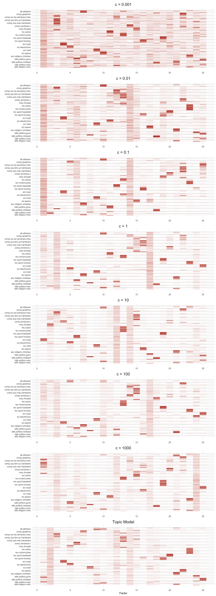
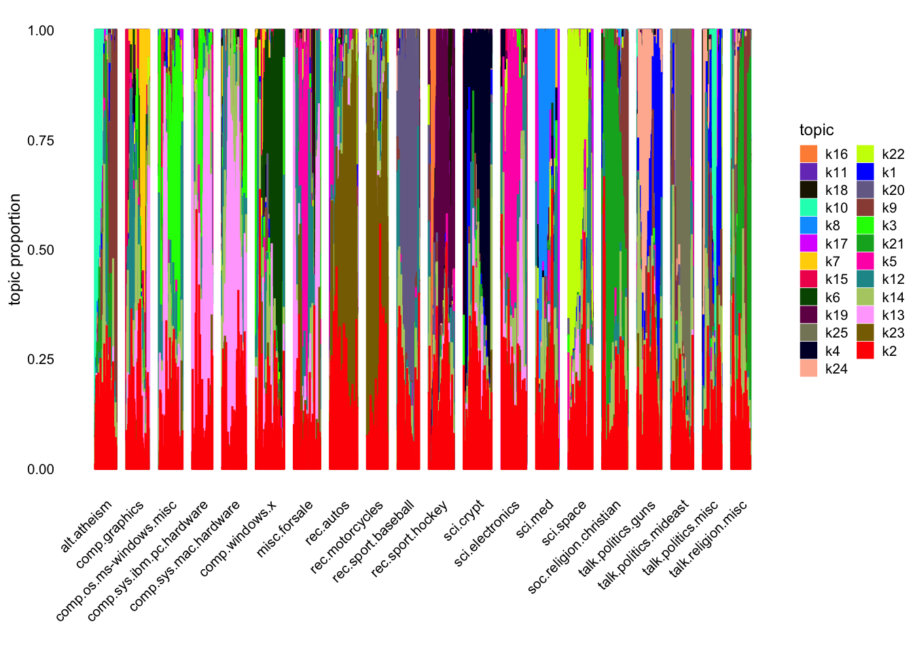

Last updated: 2025-01-29
Checks: 6 1
Knit directory: log1p_experiments/
This reproducible R Markdown analysis was created with workflowr (version 1.7.1). The Checks tab describes the reproducibility checks that were applied when the results were created. The Past versions tab lists the development history.
The R Markdown file has unstaged changes. To know which version of
the R Markdown file created these results, you’ll want to first commit
it to the Git repo. If you’re still working on the analysis, you can
ignore this warning. When you’re finished, you can run
wflow_publish to commit the R Markdown file and build the
HTML.
Great job! The global environment was empty. Objects defined in the global environment can affect the analysis in your R Markdown file in unknown ways. For reproduciblity it’s best to always run the code in an empty environment.
The command set.seed(20240402) was run prior to running
the code in the R Markdown file. Setting a seed ensures that any results
that rely on randomness, e.g. subsampling or permutations, are
reproducible.
Great job! Recording the operating system, R version, and package versions is critical for reproducibility.
Nice! There were no cached chunks for this analysis, so you can be confident that you successfully produced the results during this run.
Great job! Using relative paths to the files within your workflowr project makes it easier to run your code on other machines.
Great! You are using Git for version control. Tracking code development and connecting the code version to the results is critical for reproducibility.
The results in this page were generated with repository version 5fd4ca9. See the Past versions tab to see a history of the changes made to the R Markdown and HTML files.
Note that you need to be careful to ensure that all relevant files for
the analysis have been committed to Git prior to generating the results
(you can use wflow_publish or
wflow_git_commit). workflowr only checks the R Markdown
file, but you know if there are other scripts or data files that it
depends on. Below is the status of the Git repository when the results
were generated:
Ignored files:
Ignored: .DS_Store
Ignored: .Rhistory
Ignored: analysis/figure/
Ignored: data/.DS_Store
Unstaged changes:
Modified: analysis/newsgroups25.Rmd
Note that any generated files, e.g. HTML, png, CSS, etc., are not included in this status report because it is ok for generated content to have uncommitted changes.
These are the previous versions of the repository in which changes were
made to the R Markdown (analysis/newsgroups25.Rmd) and HTML
(docs/newsgroups25.html) files. If you’ve configured a
remote Git repository (see ?wflow_git_remote), click on the
hyperlinks in the table below to view the files as they were in that
past version.
| File | Version | Author | Date | Message |
|---|---|---|---|---|
| Rmd | 5fd4ca9 | Eric Weine | 2025-01-29 | added updated newsgroups |
| html | 5fd4ca9 | Eric Weine | 2025-01-29 | added updated newsgroups |
| Rmd | 6504bbe | Eric Weine | 2025-01-29 | added newsgroups 25 |
| html | 6504bbe | Eric Weine | 2025-01-29 | added newsgroups 25 |
Here, I will apply the log1p matrix factorization model
to the Newsgroups dataset using 25 factors.
load("~/Downloads/newsgroups.RData")
library(dplyr)
library(Matrix)
library(fastTopics)
library(passPCA)
rm(counts)
# I did the following to the original dataset
# counts <- counts[, !(colnames(counts) %in% stopwords("SMART"))]
# colnames(counts) <- wordStem(colnames(counts))
counts <- readr::read_rds(
"~/Downloads/newsgroups_stemmed_stopwords.rds"
)
topics <- topics[Matrix::rowSums(counts) > 9]
counts <- counts[Matrix::rowSums(counts) > 9, ]
genes_to_use <- which(Matrix::colSums(counts>0)>4)
counts <- counts[,genes_to_use]
s <- Matrix::rowSums(counts)
s <- s / mean(s)
K <- 25
cc_vec <- c(1e-3, 1e-2, 1e-1, 1, 1e1, 1e2, 1e3)
n <- nrow(counts)
p <- ncol(counts)for (cc in cc_vec) {
print(cc)
set.seed(1)
log1p_k1 <- fit_factor_model_log1p_exact(
Y = counts,
K = 1,
maxiter = 5,
s = cc * s,
init_method = "frob_nmf"
)
set.seed(1)
init_LL <- log1p_k1$U %>%
cbind(
matrix(
data = rexp(
n = n * (K - 1), rate = 15
),
nrow = n,
ncol = K - 1
)
)
set.seed(1)
init_FF <- log1p_k1$V %>%
cbind(
matrix(
data = rexp(
n = p * (K - 1), rate = 15
),
nrow = p,
ncol = K - 1
)
)
tictoc::tic()
set.seed(1)
fit <- fit_factor_model_log1p_exact(
Y = counts,
K = K,
init_U = init_LL,
init_V = init_FF,
maxiter = 100,
s = cc * s
)
total_time <- tictoc::toc()
fit[["total_time"]] <- total_time$toc
rownames(fit$U) <- rownames(counts)
rownames(fit$V) <- colnames(counts)
readr::write_rds(
fit, glue::glue("~/Documents/data/passPCA/news/news_log1p_c{cc}_k12_exact_100_iter.rds")
)
}
fit0_nmf <- fastTopics:::fit_pnmf_rank1(counts)
set.seed(1)
init_LL <- fit0_nmf$L %>%
cbind(
matrix(
data = rexp(
n = n * (K - 1), rate = 15
),
nrow = n,
ncol = K - 1
)
)
set.seed(1)
init_FF <- fit0_nmf$F %>%
cbind(
matrix(
data = rexp(
n = p * (K - 1), rate = 15
),
nrow = p,
ncol = K - 1
)
)
rownames(init_LL) <- rownames(counts)
rownames(init_FF) <- colnames(counts)
fit0_K <- init_poisson_nmf(
X = counts, F = init_FF, L = init_LL
)
fit_nmf <- fit_poisson_nmf(
X = counts,
fit0 = fit0_K,
control = list(list(nc = 7))
)
readr::write_rds(
fit_nmf, glue::glue("~/Documents/data/passPCA/news/news_pois_nmf_k12_exact_100_iter.rds")
)normalize_F <- function(LL, FF) {
max_col <- apply(LL, 2, max)
sweep(FF, 2, max_col, FUN = "*")
}library(ggpubr)
library(fastTopics)
fit_list <- list()
for (cc in cc_vec) {
fit_list[[as.character(cc)]] <- readr::read_rds(
glue::glue(
"~/Documents/data/passPCA/news/news_log1p_c{cc}_k{K}_exact_100_iter.rds"
)
)
fit_list[[as.character(cc)]]$F_normalized <- normalize_F(
fit_list[[as.character(cc)]]$U, fit_list[[as.character(cc)]]$V
)
}
fit_list[["Inf"]] <- readr::read_rds(
glue::glue("~/Documents/data/passPCA/news/news_pois_nmf_k{K}_exact_100_iter.rds")
)
fit_list[["Inf"]]$F_normalized <- normalize_F(
fit_list[["Inf"]]$L, fit_list[["Inf"]]$F
)normalize_bars <- function(LL) {
max_col <- apply(LL, 2, max)
sweep(LL, 2, max_col, FUN = "/")
}library(tidyr)
library(stringi)
library(stringr)
cell.type <- as.factor(topics)
LL_c001 <- normalize_bars(fit_list$`0.001`$U)
# Downsample the number of cells and sort them using tSNE.
set.seed(8675309)
cell.idx <- numeric(0)
cell.types <- levels(cell.type)
for (i in 1:length(cell.types)) {
which.idx <- which(cell.type == cell.types[i])
# Downsample common cell types.
if (length(which.idx) > 2000) {
which.idx <- sample(which.idx, 2000)
}
# Don't include rare cell types.
if (length(which.idx) > 10) {
# Sort using tsne.
tsne.res <- Rtsne::Rtsne(
LL_c001[which.idx, ],
dims = 1,
pca = FALSE,
normalize = FALSE,
perplexity = min(100, floor((length(which.idx) - 1) / 3) - 1),
theta = 0.1,
max_iter = 1000,
eta = 200,
check_duplicates = FALSE
)$Y[, 1]
which.idx <- which.idx[order(tsne.res)]
cell.idx <- c(cell.idx, which.idx)
}
}
cell.type <- cell.type[cell.idx]
cell.type <- droplevels(cell.type)
LL_c001 <- LL_c001[cell.idx, ]
LL_c01 <- normalize_bars(fit_list$`0.01`$U)
LL_c01 <- LL_c01[cell.idx, ]
LL_cp1 <- normalize_bars(fit_list$`0.1`$U)
LL_cp1 <- LL_cp1[cell.idx, ]
LL_c1 <- normalize_bars(fit_list$`1`$U)
LL_c1 <- LL_c1[cell.idx, ]
LL_c10 <- normalize_bars(fit_list$`10`$U)
LL_c10 <- LL_c10[cell.idx, ]
LL_c100 <- normalize_bars(fit_list$`100`$U)
LL_c100 <- LL_c100[cell.idx, ]
LL_c1000 <- normalize_bars(fit_list$`1000`$U)
LL_c1000 <- LL_c1000[cell.idx, ]
LL_cinf <- Matrix::Diagonal(x = 1 / s) %*% fit_list$`Inf`$L
LL_cinf <- normalize_bars(as.matrix(LL_cinf))
LL_cinf <- LL_cinf[cell.idx, ]
make.heatmap.tib <- function(FF) {
tib <- as_tibble(scale(FF, center = FALSE, scale = apply(FF, 2, max))) %>%
mutate(Cell.type = cell.type) %>%
arrange(Cell.type) %>%
mutate(Cell.idx = row_number())
tib <- tib %>%
pivot_longer(
-c(Cell.idx, Cell.type),
names_to = "Factor",
values_to = "Loading",
values_drop_na = TRUE
) %>%
mutate(Factor = as.numeric(str_extract(Factor, "[0-9]+")))
return(tib)
}
LL_c001_tib <- make.heatmap.tib(LL_c001)
LL_c01_tib <- make.heatmap.tib(LL_c01)
LL_cp1_tib <- make.heatmap.tib(LL_cp1)
LL_c1_tib <- make.heatmap.tib(LL_c1)
LL_c10_tib <- make.heatmap.tib(LL_c10)
LL_c100_tib <- make.heatmap.tib(LL_c100)
LL_c1000_tib <- make.heatmap.tib(LL_c1000)
LL_cinf_tib <- make.heatmap.tib(LL_cinf)
heatmap.tib <- LL_c001_tib %>% mutate(Method = "c = 0.001") %>%
bind_rows(LL_c01_tib %>% mutate(Method = "c = 0.01")) %>%
bind_rows(LL_cp1_tib %>% mutate(Method = "c = 0.1")) %>%
bind_rows(LL_c1_tib %>% mutate(Method = "c = 1")) %>%
bind_rows(LL_c10_tib %>% mutate(Method = "c = 10")) %>%
bind_rows(LL_c100_tib %>% mutate(Method = "c = 100")) %>%
bind_rows(LL_c1000_tib %>% mutate(Method = "c = 1000")) %>%
bind_rows(LL_cinf_tib %>% mutate(Method = "Topic Model")) %>%
mutate(Method = factor(Method, levels = c(
"c = 0.001", "c = 0.01", "c = 0.1", "c = 1", "c = 10", "c = 100", "c = 1000", "Topic Model")))
tib <- heatmap.tib %>%
group_by(Cell.type, Cell.idx) %>%
summarize()
cell_type_breaks <- c(1, which(tib$Cell.type[-1] != tib$Cell.type[-nrow(tib)]))
label_pos <- cell_type_breaks / 2 + c(cell_type_breaks[-1], nrow(tib)) / 2
library(ggplot2)
plt <- ggplot(heatmap.tib, aes(x = Factor, y = -Cell.idx, fill = Loading)) +
geom_tile() +
scale_fill_gradient(low = "white", high = "firebrick") +
labs(y = "") +
scale_y_continuous(breaks = -label_pos,
minor_breaks = NULL,
labels = levels(cell.type)) +
scale_x_continuous(breaks = seq(0, 30, 5)) +
theme_minimal() +
geom_hline(yintercept = -cell_type_breaks, size = 0.1) +
facet_wrap(~Method, ncol = 1, axes = "all") +
theme(legend.position = "none",
strip.text = element_text(size = 16))
plt
| Version | Author | Date |
|---|---|---|
| 6504bbe | Eric Weine | 2025-01-29 |
The plot of the fastTopics fit above looks weird, and I believe it is perhaps because the most loaded document on each topic is often much more loaded than any other topic, and so normalizing the columns to have maximum value \(1\) distorts the fit. I plot a structure plot of the fastTopcis fit below:
sp <- fastTopics::structure_plot(fit_list$`Inf`, grouping = topics, gap = 40)sp
Below, I print out the top \(10\) words for each factor from each model.
get_keywords <- function(V) {
kw_list <- list()
for (k in 1:ncol(V)) {
kw_list[[k]] <- names(head(sort(V[,k], decreasing = T), 10))
names(kw_list[[k]]) <- round(head(sort(V[,k], decreasing = T), 10) / max(
head(sort(V[,k], decreasing = T), 10)
), 1)
}
return(kw_list)
}kw_lists <- list()
for (cc in c(cc_vec)) {
fit <- fit_list[[as.character(cc)]]
kw_lists[[as.character(cc)]] <- get_keywords(fit$F_normalized)
}
kw_lists[["Inf"]] <- get_keywords(fit_list$`Inf`$F_normalized)print(kw_lists[[as.character(1e-3)]])[[1]]
1 0.9 0.9 0.8 0.8
"stephanopoulo" "don" "ll" "ve" "talk"
0.8 0.8 0.8 0.8 0.8
"thing" "peopl" "job" "didn" "mr"
[[2]]
1 1 1 1 0.9 0.9 0.9 0.9 0.9 0.9
"ei" "um" "pa" "el" "mu" "ma" "di" "mf" "cx" "ta"
[[3]]
1 1 0.9 0.9 0.9
"scsi" "mb" "card" "mhz" "motherboard"
0.9 0.8 0.8 0.8 0.8
"dx" "bu" "modem" "meg" "ram"
[[4]]
1 1 0.9 0.9 0.9 0.9 0.9 0.8
"encrypt" "clipper" "kei" "escrow" "nsa" "wiretap" "crypto" "chip"
0.8 0.8
"privaci" "pgp"
[[5]]
1 1 0.9 0.9 0.9 0.9
"georgia" "circuit" "prism" "wpi" "gatech" "amp"
0.9 0.9 0.9 0.9
"uga" "covington" "mcovingt" "voltag"
[[6]]
1 1 1 0.9 0.9 0.9 0.9
"batf" "koresh" "fbi" "fire" "atf" "compound" "davidian"
0.8 0.8 0.8
"bd" "tank" "survivor"
[[7]]
1 0.9 0.9 0.9 0.9 0.9
"atheist" "moral" "atheism" "belief" "religion" "theist"
0.8 0.8 0.8 0.8
"christian" "god" "theism" "exist"
[[8]]
1 0.9 0.9 0.9 0.9 0.9 0.9
"istanbul" "ankara" "armenian" "turk" "turkish" "turkei" "ermeni"
0.9 0.9 0.8
"osmanli" "armenia" "book"
[[9]]
1 1 1 0.9 0.9 0.9
"diseas" "patient" "infect" "drug" "medic" "cancer"
0.9 0.9 0.9 0.9
"physician" "clinic" "diet" "treatment"
[[10]]
1 0.8 0.8 0.8 0.8 0.8 0.8
"orbit" "nasa" "shuttl" "moon" "solar" "launch" "mission"
0.8 0.8 0.8
"lunar" "satellit" "henri"
[[11]]
1 0.9 0.9 0.8 0.8 0.8 0.8
"car" "ford" "mustang" "camaro" "sho" "callison" "auto"
0.7 0.7 0.7
"engin" "chevi" "torqu"
[[12]]
1 1 1 0.9 0.9 0.8 0.8
"homosexu" "cramer" "clayton" "optilink" "gai" "kaldi" "promiscu"
0.8 0.8 0.8
"sexual" "do" "sex"
[[13]]
1 1 0.9 0.9 0.9 0.8
"bike" "dod" "motorcycl" "biker" "ride" "harlei"
0.8 0.8 0.8 0.8
"rider" "bmw" "dog" "helmet"
[[14]]
1 0.9 0.9 0.9 0.8 0.8
"xterm" "lib" "openwindow" "motif" "xdm" "usr"
0.8 0.8 0.8 0.8
"olwm" "twm" "widget" "client"
[[15]]
1 0.9 0.9 0.9 0.9 0.8 0.8 0.8 0.8 0.8
"sale" "price" "ship" "sell" "mint" "offer" "insur" "obo" "bid" "comic"
[[16]]
1 1 1 1 1 1 1
"hockei" "team" "leaf" "lemieux" "goal" "playoff" "nhl"
1 0.9 0.9
"pt" "calgari" "winnipeg"
[[17]]
1 1 0.9 0.9 0.9 0.9
"francisco" "adl" "request" "san" "pope" "list"
0.9 0.9 0.9 0.9
"confer" "bullock" "address" "baltimor"
[[18]]
1 1 0.9 0.9 0.8
"isra" "israel" "simm" "arab" "nysernet"
0.8 0.8 0.8 0.8 0.8
"hasan" "mcgill" "mcrcim" "uiuc" "palestinian"
[[19]]
1 1 1 1 0.9 0.9 0.9 0.9
"pitcher" "pitch" "basebal" "hitter" "team" "brave" "player" "cub"
0.9 0.9
"yanke" "rbi"
[[20]]
1 0.9 0.9 0.9 0.9 0.8 0.8 0.8
"output" "printf" "char" "int" "fprintf" "eof" "stream" "input"
0.8 0.8
"stderr" "byte"
[[21]]
1 1 1 1 1 1 1
"iran" "bosnian" "serb" "bosnia" "russia" "war" "govern"
1 1 0.9
"european" "ethnic" "muslim"
[[22]]
1 0.9 0.9 0.9 0.9 0.9 0.8
"imag" "graphic" "format" "color" "gif" "jpeg" "ftp"
0.8 0.8 0.8
"pub" "file" "sharewar"
[[23]]
1 1 0.9 0.9 0.9 0.9 0.9 0.8
"christ" "jesu" "sin" "lord" "god" "heaven" "psalm" "jehovah"
0.8 0.8
"father" "spirit"
[[24]]
1 1 0.9 0.9 0.9
"azerbaijani" "apart" "sumgait" "baku" "azerbaijan"
0.9 0.9 0.9 0.9 0.9
"azeri" "henrik" "floor" "father" "color"
[[25]]
1 1 0.9 0.9 0.9 0.8 0.8 0.8
"firearm" "gun" "handgun" "weapon" "militia" "amend" "printer" "homicid"
0.8 0.8
"rkba" "font" print(kw_lists[[as.character(1e-2)]])[[1]]
1 0.9 0.9 0.8 0.8 0.8 0.8 0.8
"don" "bit" "thing" "peopl" "point" "ve" "read" "make"
0.8 0.8
"absolut" "doesn"
[[2]]
1 1 0.9 0.9 0.9 0.9 0.9 0.9 0.8 0.8
"ei" "um" "de" "pa" "db" "el" "di" "ma" "mu" "em"
[[3]]
1 1 0.9 0.9 0.9 0.9 0.8 0.8
"imag" "graphic" "ftp" "file" "pub" "format" "gif" "softwar"
0.8 0.8
"jpeg" "version"
[[4]]
1 1 0.9 0.9 0.8 0.8
"kei" "encrypt" "clipper" "chip" "escrow" "secur"
0.8 0.7 0.7 0.7
"nsa" "privaci" "pgp" "algorithm"
[[5]]
1 0.9 0.9 0.8 0.8 0.8 0.8
"homosexu" "cramer" "gai" "optilink" "sexual" "sex" "men"
0.8 0.8 0.8
"clayton" "male" "san"
[[6]]
1 0.9 0.9 0.9 0.9 0.9 0.9 0.9 0.9 0.9
"didn" "apart" "door" "don" "told" "back" "home" "ll" "start" "shout"
[[7]]
1 1 0.9 0.9 0.9 0.8 0.8
"book" "printer" "font" "theori" "print" "scienc" "larson"
0.8 0.8 0.7
"paper" "text" "scientif"
[[8]]
1 1 0.9 0.9 0.8 0.8 0.8
"armenian" "turkish" "turk" "turkei" "armenia" "muslim" "greek"
0.8 0.8 0.7
"genocid" "soviet" "ottoman"
[[9]]
1 1 0.9 0.9 0.9 0.9
"patient" "diseas" "drug" "infect" "medic" "treatment"
0.9 0.9 0.8 0.8
"vitamin" "doctor" "diet" "cancer"
[[10]]
1 1 0.9 0.9 0.9 0.9 0.8
"moral" "atheist" "god" "atheism" "religion" "islam" "belief"
0.8 0.8 0.8
"object" "exist" "muslim"
[[11]]
1 0.9 0.9 0.9 0.9 0.8 0.8 0.8
"wire" "circuit" "ground" "amp" "batteri" "voltag" "signal" "db"
0.8 0.8
"power" "led"
[[12]]
1 0.9 0.8 0.8 0.8 0.7
"do" "window" "disk" "drive" "driver" "microsoft"
0.7 0.7 0.7 0.7
"file" "o" "win" "mous"
[[13]]
1 1 0.9 0.9 0.9 0.8 0.8 0.8
"mhz" "card" "appl" "simm" "monitor" "mac" "price" "dx"
0.8 0.8
"chip" "video"
[[14]]
1 1 0.9 0.9 0.9 0.9 0.9 0.9
"uiuc" "ac" "apr" "articl" "cso" "org" "write" "gov"
0.8 0.8
"gatech" "ohio"
[[15]]
1 0.9 0.8 0.8 0.7
"presid" "myer" "m" "stephanopoulo" "administr"
0.7 0.7 0.7 0.7 0.7
"tax" "packag" "meet" "fund" "senat"
[[16]]
1 1 1 1 0.9 0.9 0.9 0.9
"pit" "det" "period" "bo" "tor" "chi" "pt" "la"
0.9 0.9
"goal" "van"
[[17]]
1 0.9 0.9 0.8 0.8 0.8
"orbit" "launch" "space" "mission" "earth" "moon"
0.8 0.8 0.8 0.8
"shuttl" "solar" "spacecraft" "satellit"
[[18]]
1 1 0.9 0.9 0.8
"israel" "isra" "arab" "jew" "palestinian"
0.8 0.7 0.6 0.6 0.6
"jewish" "occupi" "lebanes" "war" "boni"
[[19]]
1 1 0.9 0.9 0.8 0.8 0.8
"hockei" "gm" "game" "espn" "team" "ca" "fan"
0.8 0.8 0.8
"canadian" "sport" "basebal"
[[20]]
1 1 0.9 0.9 0.9 0.9 0.8 0.8
"pitch" "pitcher" "game" "hitter" "basebal" "team" "bat" "win"
0.8 0.8
"hit" "brave"
[[21]]
1 0.9 0.9 0.9 0.9 0.8
"god" "jesu" "christian" "christ" "sin" "church"
0.8 0.8 0.8 0.7
"bibl" "lord" "scriptur" "faith"
[[22]]
1 1 0.9 0.9 0.9 0.9 0.8 0.8
"widget" "lib" "xterm" "window" "usr" "server" "motif" "defin"
0.8 0.8
"displai" "string"
[[23]]
1 1 0.9 0.8 0.8 0.8
"car" "bike" "dod" "ride" "bmw" "motorcycl"
0.8 0.7 0.7 0.7
"wheel" "brake" "road" "honda"
[[24]]
1 1 0.9 0.9 0.9 0.8 0.8
"fbi" "koresh" "batf" "compound" "fire" "bd" "atf"
0.8 0.8 0.8
"cult" "davidian" "ga"
[[25]]
1 0.9 0.9 0.8 0.8 0.8
"gun" "firearm" "weapon" "law" "crime" "handgun"
0.8 0.8 0.7 0.7
"amend" "drug" "crimin" "constitut" print(kw_lists[[as.character(1e-1)]])[[1]]
1 0.8 0.8 0.7 0.7 0.7 0.7 0.7
"don" "thing" "peopl" "ve" "ll" "didn" "good" "time"
0.6 0.6
"back" "problem"
[[2]]
1 0.8 0.7 0.7 0.7 0.7 0.7
"homosexu" "cramer" "sex" "gai" "men" "drug" "sexual"
0.6 0.6 0.6
"optilink" "govern" "articl"
[[3]]
1 0.8 0.7 0.6 0.6 0.6 0.5
"armenian" "turkish" "turk" "armenia" "turkei" "greek" "soviet"
0.5 0.5 0.5
"russian" "muslim" "genocid"
[[4]]
1 0.9 0.8 0.7 0.7 0.6
"kei" "encrypt" "chip" "secur" "clipper" "govern"
0.6 0.6 0.6 0.6
"escrow" "law" "algorithm" "phone"
[[5]]
1 0.8 0.7 0.7 0.7 0.7 0.7 0.7
"imag" "jpeg" "file" "graphic" "format" "gif" "color" "bit"
0.6 0.6
"program" "displai"
[[6]]
1 0.9 0.9 0.8 0.8 0.8
"mail" "list" "post" "send" "address" "inform"
0.7 0.7 0.7 0.7
"newsgroup" "book" "email" "group"
[[7]]
1 0.9 0.8 0.7 0.7 0.7
"god" "jesu" "christian" "christ" "church" "sin"
0.7 0.6 0.5 0.5
"bibl" "lord" "faith" "word"
[[8]]
1 0.8 0.7 0.7 0.6
"presid" "mr" "state" "stephanopoulo" "tax"
0.6 0.6 0.6 0.6 0.6
"m" "american" "myer" "insur" "govern"
[[9]]
1 1 1 0.9 0.9 0.8 0.8 0.8
"patient" "diseas" "medic" "doctor" "food" "drug" "effect" "infect"
0.8 0.8
"cancer" "studi"
[[10]]
1 0.9 0.9 0.8 0.8 0.8
"god" "exist" "moral" "atheist" "object" "belief"
0.8 0.8 0.7 0.7
"religion" "christian" "argument" "evid"
[[11]]
1 0.7 0.7 0.7 0.6 0.6 0.6 0.6
"gun" "fire" "fbi" "weapon" "koresh" "batf" "firearm" "govern"
0.5 0.5
"arm" "law"
[[12]]
1 0.9 0.9 0.9 0.9 0.8 0.8 0.8
"game" "team" "year" "player" "hit" "pitch" "run" "basebal"
0.7 0.7
"win" "pitcher"
[[13]]
1 0.7 0.6 0.6 0.6 0.5 0.5 0.5
"car" "wire" "power" "engin" "ground" "batteri" "circuit" "drive"
0.5 0.5
"oil" "speed"
[[14]]
1 1 0.9 0.8 0.8 0.8 0.7 0.7
"articl" "write" "apr" "ac" "c" "univers" "uk" "ca"
0.7 0.6
"uiuc" "cc"
[[15]]
1 0.9 0.8 0.7 0.7 0.7 0.7
"space" "nasa" "launch" "shuttl" "orbit" "henri" "cost"
0.6 0.6 0.6
"gov" "mission" "satellit"
[[16]]
1 0.9 0.9 0.8 0.7 0.7 0.7 0.7
"game" "team" "hockei" "player" "plai" "ca" "fan" "win"
0.6 0.6
"season" "gm"
[[17]]
1 0.9 0.9 0.8 0.8 0.8
"earth" "planet" "orbit" "space" "energi" "water"
0.8 0.8 0.8 0.8
"atmospher" "spacecraft" "physic" "probe"
[[18]]
1 0.9 0.9 0.9 0.7
"israel" "arab" "isra" "jew" "jewish"
0.7 0.7 0.7 0.6 0.6
"palestinian" "muslim" "war" "write" "kill"
[[19]]
1 1 1 0.9 0.9 0.8 0.8 0.8
"sale" "price" "offer" "ship" "sell" "st" "appear" "condit"
0.8 0.8
"printer" "copi"
[[20]]
1 0.9 0.9 0.9 0.9 0.8 0.8 0.8
"window" "file" "widget" "entri" "program" "output" "set" "displai"
0.8 0.7
"server" "motif"
[[21]]
1 0.7 0.6 0.6 0.6 0.6 0.6 0.6 0.6 0.6
"db" "ei" "bh" "um" "di" "si" "pa" "el" "de" "ma"
[[22]]
1 0.9 0.8 0.8 0.7 0.7 0.7 0.7
"drive" "scsi" "card" "mb" "mhz" "mac" "control" "bu"
0.7 0.7
"monitor" "id"
[[23]]
1 0.9 0.8 0.7 0.7 0.6
"bike" "dod" "ride" "motorcycl" "write" "dog"
0.6 0.6 0.6 0.6
"articl" "road" "bmw" "rider"
[[24]]
1 0.9 0.9 0.9 0.9 0.9 0.8 0.8
"pt" "pit" "la" "period" "det" "bo" "chi" "tor"
0.8 0.8
"van" "pp"
[[25]]
1 0.9 0.7 0.7 0.6 0.6
"window" "do" "file" "driver" "run" "o"
0.6 0.6 0.6 0.6
"program" "disk" "microsoft" "m" print(kw_lists[[as.character(1)]])[[1]]
1 0.8 0.8 0.8 0.7 0.6 0.6 0.6
"mail" "inform" "post" "list" "book" "address" "group" "send"
0.5 0.5
"email" "univers"
[[2]]
1 0.8 0.6 0.5 0.5 0.5 0.5
"presid" "mr" "state" "tax" "year" "american" "work"
0.5 0.5 0.5
"program" "monei" "govern"
[[3]]
1 1 0.7 0.5 0.5 0.4 0.4 0.3
"write" "articl" "apr" "ca" "c" "ac" "univers" "uk"
0.3 0.3
"cc" "uiuc"
[[4]]
1 1 0.9 0.8 0.7 0.7 0.7 0.6 0.6 0.6
"de" "ei" "pa" "um" "ma" "el" "ve" "di" "sg" "mu"
[[5]]
1 1 0.8 0.7 0.7 0.7 0.6 0.6
"power" "wire" "ground" "batteri" "circuit" "radio" "work" "signal"
0.5 0.5
"heat" "switch"
[[6]]
1 0.8 0.7 0.6 0.6 0.5 0.5
"fire" "fbi" "koresh" "batf" "write" "gun" "articl"
0.5 0.5 0.5
"children" "govern" "compound"
[[7]]
1 0.8 0.6 0.5 0.5 0.4 0.4
"space" "nasa" "orbit" "launch" "earth" "gov" "mission"
0.4 0.4 0.4
"satellit" "system" "moon"
[[8]]
1 0.7 0.6 0.5 0.5 0.4 0.4
"armenian" "turkish" "muslim" "turk" "war" "armenia" "turkei"
0.4 0.4 0.4
"greek" "peopl" "genocid"
[[9]]
1 0.9 0.9 0.8 0.8 0.8
"medic" "diseas" "patient" "effect" "doctor" "food"
0.7 0.7 0.7 0.7
"studi" "drug" "health" "treatment"
[[10]]
1 1 1 0.8 0.7 0.7 0.7
"god" "exist" "moral" "homosexu" "object" "religion" "atheist"
0.7 0.7 0.6
"evid" "write" "argument"
[[11]]
1 0.5 0.3 0.3 0.3 0.3 0.3 0.2
"car" "engin" "drive" "speed" "mile" "price" "oil" "dealer"
0.2 0.2
"auto" "ford"
[[12]]
1 0.8 0.6 0.6 0.5 0.5 0.5 0.4
"gun" "law" "state" "govern" "crime" "peopl" "right" "weapon"
0.4 0.4
"legal" "drug"
[[13]]
1 0.8 0.7 0.7 0.7 0.5
"bike" "dod" "ride" "write" "articl" "motorcycl"
0.4 0.4 0.4 0.3
"dog" "ca" "cb" "apr"
[[14]]
1 1 0.8 0.7 0.7 0.7 0.6 0.6
"graphic" "imag" "ftp" "data" "pub" "system" "program" "support"
0.6 0.6
"version" "softwar"
[[15]]
1 1 0.6 0.5 0.5 0.5 0.5 0.5
"window" "do" "price" "pc" "modem" "softwar" "system" "o"
0.5 0.4
"sale" "printer"
[[16]]
1 0.7 0.7 0.6 0.5 0.5 0.5 0.4
"drive" "card" "scsi" "mb" "disk" "system" "control" "bu"
0.4 0.4
"mhz" "mac"
[[17]]
1 0.6 0.6 0.6 0.6 0.5 0.5 0.5
"don" "peopl" "thing" "good" "make" "ve" "write" "time"
0.4 0.4
"problem" "articl"
[[18]]
1 0.8 0.8 0.7 0.5
"israel" "arab" "isra" "jew" "jewish"
0.5 0.4 0.4 0.4 0.4
"palestinian" "write" "kill" "peac" "war"
[[19]]
1 0.8 0.7 0.7 0.7 0.6 0.6 0.5
"game" "year" "team" "hit" "player" "run" "basebal" "win"
0.5 0.5
"pitch" "plai"
[[20]]
1 0.9 0.7 0.7 0.6 0.6 0.5 0.5
"window" "file" "program" "db" "entri" "set" "displai" "widget"
0.5 0.5
"output" "applic"
[[21]]
1 0.7 0.7 0.5 0.4 0.4
"god" "christian" "jesu" "church" "bibl" "christ"
0.4 0.3 0.3 0.3
"sin" "word" "love" "lord"
[[22]]
1 0.8 0.6 0.6 0.6 0.6 0.5 0.5
"file" "imag" "window" "jpeg" "program" "color" "bit" "gif"
0.5 0.4
"format" "version"
[[23]]
1 0.8 0.7 0.7 0.6 0.5 0.4 0.4
"game" "team" "plai" "hockei" "player" "goal" "win" "season"
0.4 0.4
"pt" "period"
[[24]]
1 0.9 0.9 0.8 0.8 0.8 0.8 0.8 0.7 0.7
"peopl" "time" "didn" "kill" "home" "dai" "live" "told" "left" "start"
[[25]]
1 0.7 0.6 0.6 0.5 0.4 0.4 0.4
"kei" "encrypt" "chip" "secur" "clipper" "govern" "system" "phone"
0.3 0.3
"de" "escrow" print(kw_lists[[as.character(10)]])[[1]]
1 0.5 0.4 0.4 0.3 0.3 0.3 0.2
"kei" "encrypt" "chip" "secur" "govern" "clipper" "system" "public"
0.2 0.2
"phone" "privaci"
[[2]]
1 0.9 0.7 0.6 0.6 0.6 0.5
"price" "mail" "sell" "bui" "offer" "sale" "email"
0.5 0.5 0.4
"interest" "phone" "compani"
[[3]]
1 0.7 0.5 0.3 0.3 0.3 0.3 0.2
"window" "do" "file" "program" "run" "driver" "system" "disk"
0.2 0.2
"o" "m"
[[4]]
1 0.8 0.8 0.8 0.8 0.7 0.7 0.6
"server" "file" "list" "mail" "mit" "run" "sun" "motif"
0.6 0.6
"system" "user"
[[5]]
1 0.8 0.6 0.6 0.6 0.5 0.5 0.5
"power" "wire" "ground" "batteri" "work" "water" "circuit" "light"
0.5 0.4
"signal" "radio"
[[6]]
1 0.7 0.7 0.5 0.4 0.4 0.3 0.3
"game" "team" "plai" "hockei" "player" "goal" "win" "season"
0.3 0.3
"playoff" "period"
[[7]]
1 0.8 0.7 0.7 0.6 0.6 0.5
"presid" "mr" "nation" "state" "inform" "program" "american"
0.5 0.5 0.5
"year" "univers" "report"
[[8]]
1 0.6 0.4 0.4 0.3 0.3 0.3
"armenian" "turkish" "muslim" "turk" "turkei" "armenia" "greek"
0.3 0.3 0.3
"peopl" "genocid" "war"
[[9]]
1 0.9 0.8 0.8 0.8 0.7
"medic" "diseas" "patient" "health" "doctor" "effect"
0.7 0.7 0.6 0.6
"food" "drug" "studi" "treatment"
[[10]]
1 1 0.9 0.8 0.7 0.7 0.7
"moral" "exist" "homosexu" "god" "object" "peopl" "write"
0.7 0.6 0.6
"atheist" "evid" "belief"
[[11]]
1 0.5 0.4 0.3 0.3 0.3 0.3 0.3 0.3 0.2
"de" "pa" "ei" "ma" "um" "uni" "el" "sg" "mc" "nl"
[[12]]
1 0.6 0.5 0.5 0.5 0.4 0.4 0.4
"don" "peopl" "make" "thing" "time" "good" "ve" "write"
0.3 0.3
"problem" "point"
[[13]]
1 0.4 0.3 0.3 0.3 0.3 0.3 0.3
"car" "bike" "dod" "write" "articl" "ride" "engin" "drive"
0.2 0.2
"road" "speed"
[[14]]
1 0.9 0.5 0.3 0.3 0.2 0.2 0.2
"write" "articl" "apr" "ca" "c" "ac" "univers" "uk"
0.1 0.1
"uiuc" "post"
[[15]]
1 0.7 0.5 0.5 0.4 0.4 0.4 0.3
"drive" "card" "scsi" "mb" "mac" "system" "appl" "control"
0.3 0.3
"monitor" "disk"
[[16]]
1 0.7 0.4 0.4 0.4 0.4 0.3
"space" "nasa" "orbit" "gov" "launch" "earth" "mission"
0.3 0.3 0.2
"system" "satellit" "moon"
[[17]]
1 0.7 0.6 0.6 0.5 0.5 0.5
"fire" "fbi" "koresh" "write" "batf" "peopl" "articl"
0.4 0.4 0.4
"children" "govern" "compound"
[[18]]
1 0.7 0.7 0.7 0.5
"israel" "arab" "isra" "jew" "jewish"
0.4 0.4 0.3 0.3 0.3
"war" "palestinian" "kill" "write" "peac"
[[19]]
1 0.7 0.6 0.5 0.5 0.4 0.4 0.4
"game" "year" "team" "hit" "player" "run" "basebal" "plai"
0.4 0.4
"pitch" "win"
[[20]]
1 0.9 0.9 0.9 0.9 0.8 0.7
"db" "entri" "program" "file" "window" "output" "line"
0.6 0.5 0.5
"displai" "widget" "function"
[[21]]
1 0.6 0.5 0.3 0.3 0.3
"god" "christian" "jesu" "church" "christ" "sin"
0.3 0.2 0.2 0.2
"bibl" "love" "faith" "peopl"
[[22]]
1 0.6 0.5 0.4 0.4 0.3 0.3 0.3
"imag" "file" "graphic" "format" "program" "jpeg" "color" "data"
0.3 0.3
"softwar" "bit"
[[23]]
1 0.4 0.3 0.3 0.3 0.3 0.3
"book" "word" "read" "islam" "write" "refer" "quot"
0.2 0.2 0.2
"text" "post" "religion"
[[24]]
1 1 1 0.8 0.8 0.8 0.8 0.8 0.8 0.7
"dai" "time" "peopl" "live" "home" "kill" "didn" "night" "back" "told"
[[25]]
1 0.7 0.6 0.5 0.5 0.4 0.4 0.3
"gun" "law" "govern" "state" "peopl" "crime" "right" "weapon"
0.3 0.3
"legal" "control" print(kw_lists[[as.character(100)]])[[1]]
1 0.6 0.5 0.5 0.5 0.5 0.4
"mail" "inform" "list" "univers" "post" "comput" "email"
0.4 0.4 0.4
"send" "address" "internet"
[[2]]
1 0.7 0.6 0.4 0.3 0.2 0.2
"write" "articl" "au" "apr" "caltech" "don" "ti"
0.2 0.2 0.2
"keith" "se" "detector"
[[3]]
1 0.9 0.5 0.3 0.2 0.2 0.2 0.1
"write" "articl" "apr" "ca" "c" "ac" "uk" "uiuc"
0.1 0.1
"cc" "new"
[[4]]
1 0.6 0.4 0.3 0.3 0.3 0.3
"space" "nasa" "orbit" "launch" "gov" "earth" "mission"
0.2 0.2 0.2
"satellit" "system" "moon"
[[5]]
1 0.6 0.6 0.5 0.5 0.4
"god" "exist" "moral" "religion" "christian" "atheist"
0.4 0.4 0.3 0.3
"peopl" "belief" "write" "don"
[[6]]
1 0.6 0.6 0.5 0.5 0.5 0.4
"fire" "fbi" "peopl" "koresh" "children" "kill" "start"
0.4 0.4 0.4
"batf" "govern" "dai"
[[7]]
1 0.6 0.6 0.4 0.3 0.3
"god" "christian" "jesu" "church" "christ" "bibl"
0.3 0.2 0.2 0.2
"sin" "love" "lord" "peopl"
[[8]]
1 0.5 0.4 0.3 0.3 0.3 0.3
"armenian" "turkish" "muslim" "turk" "armenia" "turkei" "greek"
0.3 0.3 0.2
"peopl" "war" "russian"
[[9]]
1 0.8 0.8 0.8 0.7 0.7
"medic" "diseas" "patient" "doctor" "food" "effect"
0.6 0.6 0.6 0.6
"health" "drug" "studi" "treatment"
[[10]]
1 0.9 0.9 0.7 0.7 0.6 0.6
"point" "question" "claim" "discuss" "word" "reason" "make"
0.6 0.6 0.6
"fact" "evid" "peopl"
[[11]]
1 1 0.9 0.9 0.8 0.8 0.7 0.7
"gatech" "mil" "pa" "ai" "ma" "ei" "georgia" "navi"
0.6 0.6
"prism" "um"
[[12]]
1 0.7 0.5 0.4 0.3 0.3 0.3
"gun" "law" "peopl" "state" "crime" "weapon" "right"
0.3 0.3 0.3
"homosexu" "drug" "firearm"
[[13]]
1 0.4 0.3 0.3 0.2 0.2 0.2 0.2
"car" "bike" "dod" "ride" "engin" "drive" "articl" "write"
0.2 0.2
"road" "speed"
[[14]]
1 0.5 0.4 0.3 0.2 0.2 0.2 0.2
"window" "do" "run" "file" "server" "program" "system" "applic"
0.2 0.2
"version" "font"
[[15]]
1 0.7 0.5 0.5 0.5 0.4 0.4 0.4
"drive" "card" "disk" "scsi" "mb" "system" "mac" "work"
0.4 0.3
"problem" "driver"
[[16]]
1 0.8 0.8 0.7 0.6 0.5 0.5
"presid" "govern" "mr" "state" "tax" "american" "monei"
0.5 0.4 0.4
"nation" "clinton" "peopl"
[[17]]
1 0.6 0.5 0.5 0.5 0.4 0.4 0.3 0.3 0.3
"don" "time" "thing" "peopl" "good" "ve" "make" "ll" "back" "lot"
[[18]]
1 0.8 0.7 0.6 0.5 0.4 0.4 0.4
"price" "sell" "sale" "offer" "ship" "book" "copi" "includ"
0.3 0.3
"st" "condit"
[[19]]
1 0.8 0.6 0.6 0.5 0.5 0.4 0.4
"game" "year" "team" "hit" "player" "run" "basebal" "plai"
0.4 0.4
"win" "pitch"
[[20]]
1 1 0.9 0.8 0.8 0.7 0.5
"file" "db" "entri" "program" "output" "line" "widget"
0.5 0.5 0.5
"function" "set" "event"
[[21]]
1 0.8 0.7 0.7 0.5
"israel" "jew" "arab" "isra" "jewish"
0.4 0.4 0.3 0.3 0.3
"war" "palestinian" "peopl" "kill" "write"
[[22]]
1 0.8 0.5 0.4 0.4 0.3 0.3 0.3
"imag" "file" "graphic" "program" "format" "color" "ftp" "jpeg"
0.3 0.3
"bit" "gif"
[[23]]
1 0.7 0.6 0.5 0.4 0.3 0.3 0.3
"game" "team" "plai" "hockei" "player" "goal" "win" "season"
0.3 0.3
"playoff" "la"
[[24]]
1 0.7 0.6 0.6 0.5 0.5 0.5 0.5
"power" "wire" "ground" "work" "batteri" "water" "circuit" "light"
0.4 0.4
"signal" "switch"
[[25]]
1 0.5 0.4 0.4 0.3 0.3 0.3 0.2
"kei" "encrypt" "chip" "secur" "govern" "clipper" "system" "phone"
0.2 0.2
"de" "public" print(kw_lists[[as.character(1000)]])[[1]]
1 0.8 0.7 0.6 0.6 0.5 0.5 0.5
"drive" "card" "do" "disk" "system" "window" "scsi" "mb"
0.4 0.4
"pc" "driver"
[[2]]
1 0.4 0.4 0.4 0.4 0.3 0.3 0.3
"de" "se" "germani" "pa" "ei" "fi" "um" "ma"
0.3 0.3
"sweden" "nl"
[[3]]
1 0.9 0.5 0.3 0.3 0.1 0.1 0.1
"write" "articl" "apr" "ca" "c" "uiuc" "cc" "david"
0.1 0.1
"new" "don"
[[4]]
1 1 0.6 0.5 0.5 0.5 0.4
"write" "articl" "toronto" "org" "henri" "sun" "apr"
0.4 0.4 0.4
"isc" "berkelei" "eng"
[[5]]
1 0.5 0.4 0.4 0.4 0.3 0.3 0.3
"gun" "fire" "peopl" "fbi" "weapon" "law" "koresh" "govern"
0.3 0.3
"arm" "kill"
[[6]]
1 0.9 0.9 0.8 0.8 0.7 0.7 0.7 0.7 0.7
"dai" "time" "peopl" "kill" "home" "didn" "back" "call" "told" "start"
[[7]]
1 1 0.9 0.9 0.6 0.6 0.5
"govern" "presid" "state" "mr" "peopl" "tax" "american"
0.5 0.4 0.4
"monei" "nation" "clinton"
[[8]]
1 0.6 0.4 0.4 0.4 0.3 0.3
"armenian" "turkish" "muslim" "war" "turk" "peopl" "turkei"
0.3 0.3 0.3
"greek" "armenia" "genocid"
[[9]]
1 0.9 0.8 0.7 0.7 0.7
"drug" "medic" "diseas" "patient" "effect" "doctor"
0.6 0.6 0.6 0.5
"food" "studi" "health" "treatment"
[[10]]
1 0.5 0.5 0.5 0.4 0.4 0.4
"homosexu" "sex" "peopl" "men" "islam" "write" "articl"
0.4 0.4 0.3
"sexual" "gai" "brian"
[[11]]
1 0.6 0.4 0.4 0.4 0.3 0.3
"space" "nasa" "orbit" "gov" "launch" "earth" "system"
0.3 0.2 0.2
"mission" "satellit" "moon"
[[12]]
1 0.9 0.5 0.5 0.3 0.3
"mail" "post" "list" "send" "email" "group"
0.3 0.3 0.3 0.3
"address" "newsgroup" "internet" "messag"
[[13]]
1 0.8 0.7 0.7 0.6 0.4
"bike" "dod" "write" "articl" "ride" "motorcycl"
0.4 0.3 0.3 0.3
"dog" "cb" "sandvik" "ca"
[[14]]
1 0.9 0.6 0.4 0.4 0.3 0.3 0.2
"ac" "uk" "window" "write" "au" "o" "articl" "m"
0.2 0.2
"mit" "comput"
[[15]]
1 0.3 0.3 0.2 0.2 0.2 0.2 0.2
"car" "price" "engin" "sell" "sale" "bui" "drive" "offer"
0.2 0.2
"dealer" "speed"
[[16]]
1 0.9 0.9 0.8 0.6 0.6 0.6 0.5
"power" "db" "monitor" "wire" "work" "cabl" "batteri" "ground"
0.5 0.5
"appl" "circuit"
[[17]]
1 0.9 0.6 0.6 0.5 0.4 0.4
"univers" "book" "inform" "research" "comput" "center" "includ"
0.3 0.3 0.3
"page" "scienc" "year"
[[18]]
1 0.7 0.7 0.7 0.5
"israel" "arab" "isra" "jew" "jewish"
0.4 0.3 0.3 0.3 0.3
"palestinian" "peac" "kill" "war" "write"
[[19]]
1 0.6 0.5 0.4 0.4 0.3 0.3 0.3
"game" "team" "plai" "player" "year" "win" "hockei" "season"
0.2 0.2
"fan" "score"
[[20]]
1 0.8 0.6 0.4 0.4 0.4 0.4 0.4
"window" "file" "program" "server" "applic" "font" "run" "displai"
0.3 0.3
"set" "entri"
[[21]]
1 0.8 0.8 0.6 0.6 0.6 0.6
"exist" "god" "moral" "object" "reason" "argument" "evid"
0.5 0.5 0.5
"peopl" "claim" "religion"
[[22]]
1 0.9 0.5 0.4 0.4 0.4 0.4 0.3
"imag" "file" "graphic" "program" "ftp" "format" "color" "softwar"
0.3 0.3
"version" "jpeg"
[[23]]
1 0.6 0.5 0.3 0.3 0.3
"god" "christian" "jesu" "church" "bibl" "christ"
0.2 0.2 0.2 0.2
"sin" "word" "peopl" "love"
[[24]]
1 0.6 0.5 0.5 0.5 0.5 0.4 0.3
"don" "good" "thing" "time" "make" "peopl" "ve" "problem"
0.3 0.3
"write" "lot"
[[25]]
1 0.5 0.4 0.4 0.3 0.3 0.3 0.2
"kei" "encrypt" "chip" "secur" "clipper" "govern" "system" "phone"
0.2 0.2
"law" "public" print(kw_lists[["Inf"]])[[1]]
1 0.9 0.9 0.9 0.7 0.6 0.6 0.5
"gun" "state" "govern" "law" "presid" "mr" "peopl" "right"
0.4 0.4
"tax" "crime"
[[2]]
1 0.5 0.5 0.5 0.5 0.5 0.4 0.3
"don" "time" "peopl" "thing" "good" "make" "ve" "ll"
0.3 0.3
"work" "problem"
[[3]]
1 0.7 0.6 0.5 0.4 0.4 0.3 0.3
"window" "do" "drive" "disk" "file" "system" "run" "program"
0.3 0.2
"m" "o"
[[4]]
1 0.5 0.4 0.4 0.3 0.3 0.3 0.2
"kei" "encrypt" "chip" "secur" "clipper" "govern" "system" "phone"
0.2 0.2
"public" "privaci"
[[5]]
1 0.7 0.5 0.5 0.5 0.5 0.4 0.4
"power" "wire" "ground" "work" "batteri" "water" "circuit" "signal"
0.4 0.4
"switch" "light"
[[6]]
1 0.9 0.7 0.6 0.5 0.5 0.5 0.5
"window" "file" "program" "server" "entri" "widget" "applic" "set"
0.5 0.5
"run" "sun"
[[7]]
1 0.9 0.5 0.5 0.4 0.4 0.4 0.3
"imag" "file" "graphic" "ftp" "program" "format" "version" "jpeg"
0.3 0.3
"data" "pub"
[[8]]
1 0.8 0.8 0.8 0.7 0.7
"medic" "diseas" "patient" "doctor" "studi" "effect"
0.7 0.6 0.5 0.5
"health" "treatment" "cancer" "drug"
[[9]]
1 0.8 0.6 0.6 0.6 0.6 0.6
"exist" "god" "moral" "reason" "evid" "claim" "religion"
0.6 0.6 0.6
"object" "question" "peopl"
[[10]]
1 0.7 0.6 0.5 0.5 0.5 0.4
"homosexu" "write" "articl" "peopl" "sex" "men" "islam"
0.4 0.4 0.3
"sexual" "gai" "cramer"
[[11]]
1 1 0.4 0.3 0.3 0.3 0.3 0.3 0.2 0.2
"db" "de" "pa" "di" "ei" "si" "um" "ma" "bh" "uni"
[[12]]
1 0.6 0.5 0.5 0.4 0.4 0.4 0.4
"mail" "post" "list" "inform" "book" "send" "comput" "email"
0.4 0.4
"univers" "address"
[[13]]
1 0.7 0.6 0.6 0.5 0.5 0.4 0.4 0.4 0.4
"card" "scsi" "mac" "mb" "appl" "drive" "bit" "bu" "pc" "mhz"
[[14]]
1 0.9 0.5 0.2 0.2 0.1 0.1 0.1
"write" "articl" "apr" "ca" "c" "ac" "uk" "uiuc"
0.1 0.1
"cc" "new"
[[15]]
1 0.9 0.7 0.7 0.7 0.6 0.5 0.5
"color" "hp" "monitor" "screen" "print" "printer" "line" "problem"
0.5 0.4
"font" "displai"
[[16]]
1 0.9 0.9 0.7 0.7 0.7 0.7 0.6
"la" "pt" "period" "shot" "van" "goal" "pit" "bo"
0.6 0.6
"det" "chi"
[[17]]
1 0.9 0.6 0.5 0.5 0.4 0.4 0.4
"write" "articl" "drug" "brian" "food" "ohio" "netcom" "apr"
0.4 0.3
"msg" "state"
[[18]]
1 0.8 0.7 0.7 0.7 0.6 0.5
"american" "san" "canada" "citi" "insur" "year" "april"
0.5 0.5 0.4
"nation" "york" "south"
[[19]]
1 0.6 0.5 0.4 0.3 0.2 0.2 0.2
"game" "team" "plai" "hockei" "player" "fan" "win" "season"
0.2 0.2
"ca" "year"
[[20]]
1 1 0.8 0.6 0.6 0.6 0.5 0.5
"game" "year" "hit" "player" "run" "team" "pitch" "basebal"
0.5 0.4
"plai" "win"
[[21]]
1 0.6 0.5 0.3 0.3 0.3
"god" "christian" "jesu" "church" "bibl" "christ"
0.3 0.2 0.2 0.2
"sin" "word" "love" "peopl"
[[22]]
1 0.6 0.4 0.4 0.3 0.3 0.3
"space" "nasa" "orbit" "launch" "earth" "gov" "mission"
0.2 0.2 0.2
"system" "satellit" "moon"
[[23]]
1 0.4 0.3 0.3 0.3 0.2 0.2 0.2
"car" "bike" "dod" "ride" "engin" "drive" "articl" "write"
0.2 0.2
"road" "speed"
[[24]]
1 0.7 0.7 0.6 0.6 0.5 0.5
"fire" "kill" "peopl" "fbi" "children" "koresh" "gun"
0.5 0.4 0.4
"start" "batf" "death"
[[25]]
1 0.8 0.7 0.6 0.6 0.6 0.5
"armenian" "israel" "jew" "arab" "isra" "turkish" "war"
0.5 0.5 0.4
"muslim" "peopl" "jewish"
sessionInfo()R version 4.4.0 (2024-04-24)
Platform: aarch64-apple-darwin20
Running under: macOS Ventura 13.5
Matrix products: default
BLAS: /Library/Frameworks/R.framework/Versions/4.4-arm64/Resources/lib/libRblas.0.dylib
LAPACK: /Library/Frameworks/R.framework/Versions/4.4-arm64/Resources/lib/libRlapack.dylib; LAPACK version 3.12.0
locale:
[1] en_US.UTF-8/en_US.UTF-8/en_US.UTF-8/C/en_US.UTF-8/en_US.UTF-8
time zone: America/New_York
tzcode source: internal
attached base packages:
[1] stats graphics grDevices utils datasets methods base
other attached packages:
[1] stringr_1.5.1 stringi_1.8.4 tidyr_1.3.1 ggpubr_0.6.0
[5] ggplot2_3.5.1 passPCA_0.1-2 fastTopics_0.6-175 Matrix_1.7-0
[9] dplyr_1.1.4
loaded via a namespace (and not attached):
[1] tidyselect_1.2.1 viridisLite_0.4.2 farver_2.1.2
[4] fastmap_1.2.0 lazyeval_0.2.2 promises_1.3.0
[7] digest_0.6.36 lifecycle_1.0.4 invgamma_1.1
[10] magrittr_2.0.3 compiler_4.4.0 rlang_1.1.4
[13] sass_0.4.9 progress_1.2.3 tools_4.4.0
[16] utf8_1.2.4 yaml_2.3.8 data.table_1.15.4
[19] knitr_1.47 ggsignif_0.6.4 prettyunits_1.2.0
[22] labeling_0.4.3 htmlwidgets_1.6.4 abind_1.4-5
[25] Rtsne_0.17 workflowr_1.7.1 withr_3.0.0
[28] purrr_1.0.2 grid_4.4.0 fansi_1.0.6
[31] git2r_0.33.0 colorspace_2.1-0 scales_1.3.0
[34] gtools_3.9.5 cli_3.6.3 rmarkdown_2.27
[37] crayon_1.5.3 generics_0.1.3 RcppParallel_5.1.7
[40] rstudioapi_0.16.0 httr_1.4.7 tzdb_0.4.0
[43] pbapply_1.7-2 cachem_1.1.0 parallel_4.4.0
[46] vctrs_0.6.5 jsonlite_1.8.8 carData_3.0-5
[49] car_3.1-2 hms_1.1.3 mixsqp_0.3-54
[52] ggrepel_0.9.5 rstatix_0.7.2 irlba_2.3.5.1
[55] plotly_4.10.4 jquerylib_0.1.4 glue_1.7.0
[58] cowplot_1.1.3 uwot_0.2.2 gtable_0.3.5
[61] later_1.3.2 quadprog_1.5-8 munsell_0.5.1
[64] tibble_3.2.1 pillar_1.9.0 htmltools_0.5.8.1
[67] truncnorm_1.0-9 R6_2.5.1 rprojroot_2.0.4
[70] evaluate_0.24.0 lattice_0.22-6 readr_2.1.5
[73] highr_0.11 backports_1.5.0 RhpcBLASctl_0.23-42
[76] broom_1.0.6 SQUAREM_2021.1 ashr_2.2-63
[79] httpuv_1.6.15 bslib_0.7.0 Rcpp_1.0.13
[82] whisker_0.4.1 xfun_0.45 fs_1.6.4
[85] pkgconfig_2.0.3